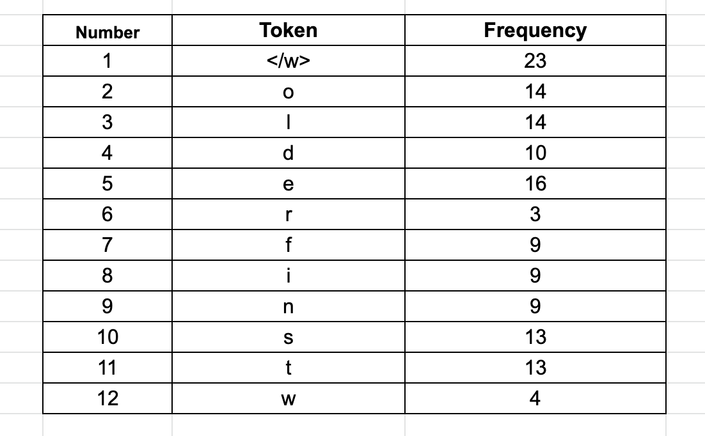
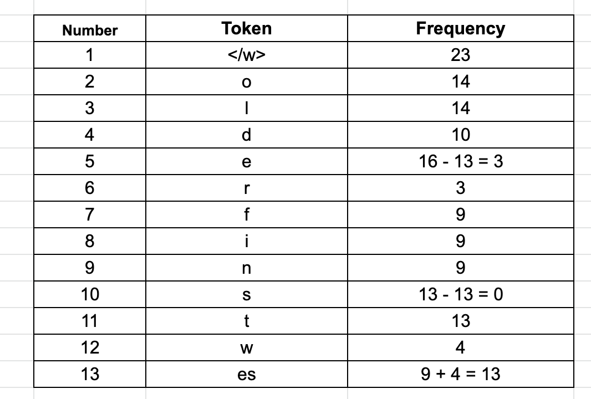
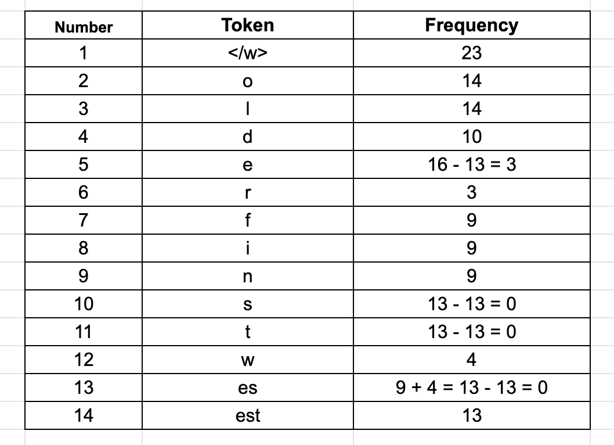
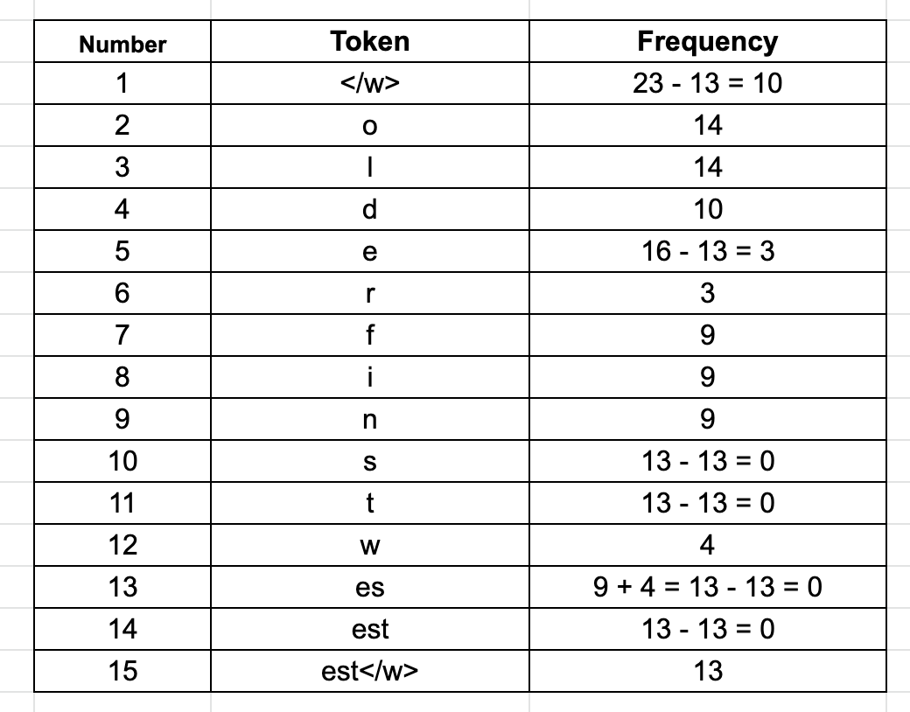
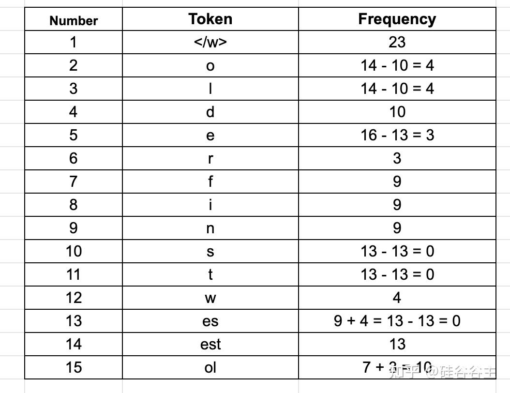
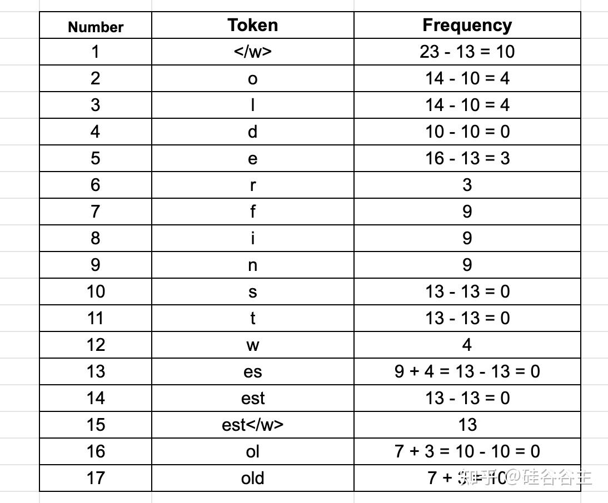
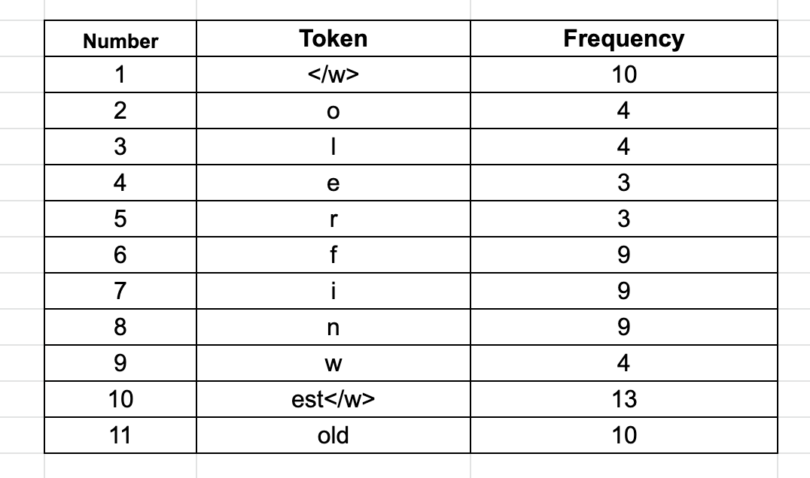

从tokenizer说起，为LLM自回归预训练准备数据集-大模型炼丹术(一)
本文首先介绍了如何从头开始实现一个自定义tokenizer，用于将原始文本数据转化为模型能够理解的格式。通过这个例子，来直观理解什么是tokenize；接着，分析这种tokenizer的优缺点，引出更常用的BPE；最后，基于BPE构建的tokenizer，构建用于GPT预训练时的数据加载器。
在阅读完本文后，你将学会如何构建用于GPT自回归预训练阶段的数据加载器，这将是你向着LLM训练迈出的第一步！
一、先动手，编写自定义tokenizer
step1. 读取语料
读取the-verdict.txt:
1 | with open("the-verdict.txt", "r", encoding="utf-8") as f: |
输出：
1 | Total number of character: 20479 |
step2. 分词
1 | preprocessed = re.split(r'([,.:;?_!"()\']|--|\s)', raw_text) |
re.split(r'([,.:;?_!"()\']|--|\s)', raw_text)将raw_text按照,.:;?_!"()\'中的任意一个（'表示的是’，\是转义，避免python语法错误），或者--，或者空格\s进行分割，接着item.strip() for item in preprocessed if item.strip()]去除空格。
输出：
1 | ['I', 'HAD', 'always', 'thought', 'Jack', 'Gisburn', 'rather', 'a', 'cheap', 'genius', '--', 'though', 'a', 'good', 'fellow', 'enough', '--', 'so', 'it', 'was', 'no', 'great', 'surprise', 'to', 'me', 'to', 'hear', 'that', ',', 'in'] |
将这20479个字符组成的文本进行分词处理后，得到的字符数量为print(len(preprocessed))=4690
step3. 制作词表
首先，对上一步分词得到的结果进行去重：
1 | all_words = sorted(set(preprocessed)) |
去重后，还剩下1130个单词。
现在开始创建词表：
1 | vocab = {token:integer for integer,token in enumerate(all_words)} |
这样，每一个不同的单词都对应一个数字索引。
打印词表中前50个单词进行查看：
1 | for i, item in enumerate(vocab.items()): |
输出：
1 | ('!', 0) |
以上是将单词映射到数字，可以称之为编码。既然有编码，那就需要对应的解码，这里就是将数字再映射回单词。
因此可以构建一个类，专门用于编码和解码：
1 | class SimpleTokenizerV1: |
举个例子：
1 | tokenizer = SimpleTokenizerV1(vocab) |
1 | [1, 56, 2, 850, 988, 602, 533, 746, 5, 1126, 596, 5, 1, 67, 7, 38, 851, 1108, 754, 793, 7] |
反向解码：
1 | tokenizer.decode(ids) |
1 | '" It\' s the last he painted, you know," Mrs. Gisburn said with pardonable pride.' |
step4. 完善词表
在进行编码解码时，如果像被编解码的对象在词表中不存在，那就会引发报错。
1 | text = "Hello, do you like tea?" |
由于在词表中没有Hello整个词，因此上述代码将引发报错：
1 | --------------------------------------------------------------------------- |
因此需要完善词表，增加对于这种特殊情况的处理。
1 | all_tokens = sorted(list(set(preprocessed))) |
增加了两个特殊标记符，因此词表长度由1130变成了1132.
据此构建新的词表类：
1 | class SimpleTokenizerV2: |
使用新版的词表类再次编码以下内容，将不再报错：
1 | tokenizer = SimpleTokenizerV2(vocab) |
输出：
1 | [1131, 5, 355, 1126, 628, 975, 10] |
二、常见的tokenizer
Word-level Tokenization 和 Character-level Tokenization
在上面，我们已经快速完成了手动编写tokenizer，上述实际上构建了一种词级（Word level）的tokenizer，它以单词为最小单位进行分词。
此外，还有许多其他的分词方式，比如字符级(Character level)，也就是将分词的粒度扩展到单个字符，举个例子(为了简便，这里不考虑空格和标点符号)：
1 | 分词前："I love AI." |
以上两种方式各有优缺点，现在来详细介绍一下。
1. Word-level Tokenization
优点：
- 语义清晰：每个 Token 是一个完整的单词，易于理解和处理。
- 句子较短：不需要将一个单词拆分成多个 Token，计算成本相对低。
缺点：
- OOV（未登录词，即没有出现在词表中的词）问题严重：例如，”Internationalization” 可能不在词表中，模型无法处理。直接填充一个特定token会导致语义缺失。
- 需要构建 超大词汇表（100K+），导致内存占用高，计算开销大。
- 对新词、拼写错误敏感：例如，”Covid19” 可能不在词汇表里，导致模型无法解析。
2. Character-level Tokenization
优点：
- 无 OOV 问题：任何新词都能被拆解。
- 词汇表极小（几十个字符），训练更高效。
缺点：
- Token 序列太长：单词被拆得过细，导致计算成本上升。
- 语义信息丢失：无法直接理解 “Neural” 和 “networks” 的关联性。
Sub-word Tokenization
Sub-word Tokenization可以平衡上面两种tokenizer，成为主流的tokonization方式。
Sub-word Tokenization 是一种介于 词级（Word-level） 和 字符级（Character-level） 之间的分词方法，能够在减少未登录词（OOV）问题的同时保持一定的语义信息。
所谓sub-word，指的是可以将一个单词拆分成若干部分，比如’NeuralNetwork’可以被拆分为[‘Neural’,’Network’].
举例子：
1 | 常见词保持整体，如 "computer" -> ["computer"] |
基于Sub-word的分词算法不会将常用词拆分为更小的子词。而是将稀有单词拆分为更小、有意义的子单词。例如，“boy” 没有被拆分，但 “boys” 被拆分为 “boy” 和 “s”。这有助于模型了解单词 “boys” 是使用单词 “boy” 构成的，其含义略有不同，但词根相同。
Sub-word Tokenization也包含多种具体的实现算法，在GPT中，广泛使用的是BPE(Byte Pair Encoding).
三、BPE(Byte Pair Encoding)
Byte Pair Encoding（BPE） 是一种 子词（Sub-word）分词算法，广泛用于 NLP 任务，尤其是像 GPT 和 Transformer 这样的深度学习模型。
它通过合并最常见的字符对（bigram），构建灵活的词汇表，以减少未登录词（OOV）问题，并兼顾计算效率。
BPE的执行步骤如下：
1 | 1.初始化词汇表：将文本拆分为字符级别的词汇表。 |
举个经典的例子。
假设对语料库统计词频如下：
{“old”: 7, “older”: 3, “finest”: 9, “lowest”: 4}
在开始执行BPE之前，首先需要在每个单词的后面添加一个/w符号，以便算法知道每个单词的结束位置。这有助于算法浏览每个字符并找到最高频率的字符配对。稍后将看到它的具体作用。
现在来逐步执行BPE。
第一步、拆分成字符并统计词频：
第二步、查找最频繁的配对字符，然后迭代的合并：
2.1 第一次迭代：
从第二常见的token “e” 开始。在当前例子的语料库中，最常见的带有 “e” 的字节对是 “e” 和 “s” （在单词 finest 和 lowest 中），它们出现了 9 + 4 = 13 次。我们将它们合并以形成一个新的token “es”，并将其频率记为 13。我们还将从单个token（“e”和“s”）中减少计数 13，从而得到剩余的 “e” 或 “s” 。可以看到 “s” 根本不单独出现，而 “e” 出现了 3 次。以下是更新后的表格：
2.2 第二次迭代：
现在，合并 “es” 和 “t”，因为它们在当前例子的语料库中已经出现了 13 次。因此，获得有一个频率为 13 的新token “est”，同时把 “es” 和 “t” 的频率减少 13。
2.3 第三次迭代：
将“est”与“/w”合并

将“/w”合并非常重要，这有助于模型区分“highest”和“estimate”，两者都有“est“，但是前者是“est/w”，表明这是一个单独的token。2.4 第四次迭代：
查看其他token，可以看到“o”和“l”在当前例子的语料库中出现了 7 + 3 = 10 次。
2.5 第五次迭代：
继续，可以看到字节对“ol”和“d”在语料库中出现了 10 次。
2.6 第六次迭代：
如果现在查看表格，会看到 “f”、“i” 和 “n” 的频率是 9，但只有一个单词包含这些字符，因此这里没有合并它们，最终的token列表如下：

以上便是对BPE的介绍，现在用Python来调用BPE。
1 | import tiktoken |
这样便得到了BPE tokenizer，来尝试一下：
1 | text = ( |
输出：
1 | [15496, 11, 466, 345, 588, 8887, 30, 220, 50256, 554, 262, 4252, 18250, 8812, 2114, 1659, 617, 34680, 27271, 13] |
解码回去：
1 | strings = tokenizer.decode(integers) |
输出：
1 | Hello, do you like tea? <|endoftext|> In the sunlit terracesof someunknownPlace. |
输出的文本 strings 有一个细微的区别：sunlit terracesof someunknownPlace 中缺少了空格。这个问题出现在词汇表的细粒度拆分上，子词分割可能将 terraces 和 of 合并成了一个词，因此没有在这两个部分之间添加空格。BPE或其他子词分割方法可能将某些词合并成子词序列，这会导致在解码时出现一些合并现象。
四、使用BPE为GPT自回归预训练阶段准备数据集
在GPT自回归预训练阶段，数据集中每个样本是由配对的[输入序列X,输出序列Y]组成的，这样的数据对是使用滑动窗口实现的。
举个例子，假设完整的句子经过BPE得到的token序列为[a,b,c,d,e]，滑动窗口的大小为4，那么一个配对样本的格式为：
1 | 输入序列X:a,b,c,d |
其中，要预测的目标Y是使用滑动窗口将X向右偏移一位得到的。
注意，上述例子中，实际上包含了4个预测过程：
1 | 第一个预测过程： |
也就是说，构建配对数据时的滑动窗口大小等于一个数据对包含的预测过程数量。
现在手动敲代码实现一下上述的数据构建过程。
首先，读取所用到的数据集：
1 | with open("the-verdict.txt", "r", encoding="utf-8") as f: |
将滑动窗口大小context_size设置为4，构造一个示例的配对样本：
1 | x = enc_sample[:context_size] |
输出：
1 | x: [40, 367, 2885, 1464] |
这个样本包含的context_size=4个预测过程为：
1 | [40] ----> 367 |
使用tokenizer解码一下更直观：
1 | for i in range(1, context_size+1): |
输出：
1 | I ----> H |
ok，了解了单个数据对的构造方法，就可以编写一个用于GPT自回归预训练的数据加载器了：
1 | from torch.utils.data import Dataset, DataLoader |
现在，来调用上述函数创建一个数据加载器：
1 | # 读取语料文本 |
这里的batch_size设置为1，来查看一下数据格式：
1 | data_iter = iter(dataloader) |
输出：
1 | [tensor([[ 40, 367, 2885, 1464]]), tensor([[ 367, 2885, 1464, 1807]])] |
现在，让我们调大batch_size：
1 | dataloader = create_dataloader_v1(raw_text, batch_size=8, max_length=4, stride=4, shuffle=False) |
输出：
1 | Inputs: |
总结
在本文中，我们完成了tokenizer的构建，并基于此tokenizer设计了用于GPT自回归预训练阶段的数据加载器。
至此，数据已经从语料库转变成了PyTorch格式的数据集，可以被批量加载。那么在加载完成数据之后，接下来的数据流向又是怎样的呢？这些内容将在后续文章中继续讨论。
参考：